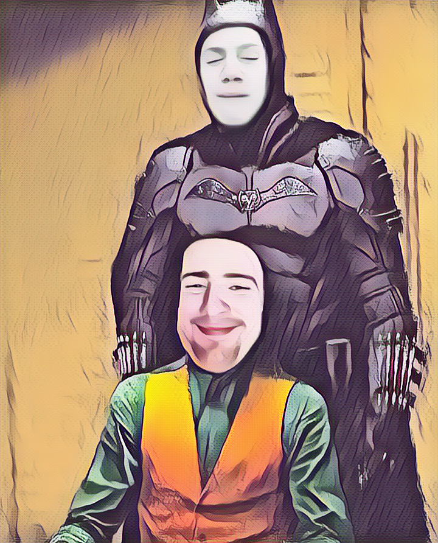
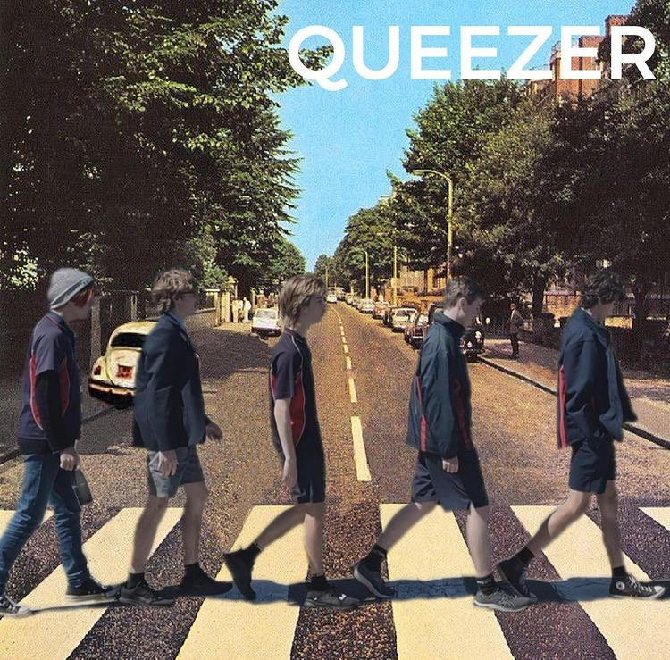

Max Manrontyde
Max Marrontyde, the owner of Max's Base nestled within the mystical territory of the Tali Clan, exudes an aura of ancient wisdom and ethereal grace. The secrets held within the Base, along with Max's mysterious connection to the enigmatic clan, hint at a lineage steeped in elven heritage.

